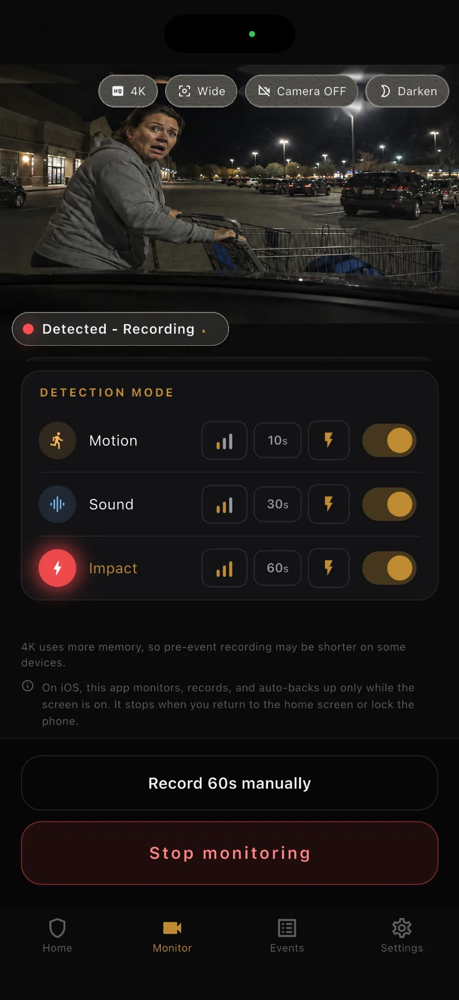

Frame the likely route
Include the lane and the corner of your car most exposed to vehicles entering or leaving the neighboring space.
Prepare before a parking-lot incident
A camera cannot prevent a parking-lot hit-and-run or guarantee decisive evidence. It can, however, preserve a time-linked view of an approaching vehicle, a possible contact, and what happens next when the phone is aimed well and the relevant trigger responds.
Updated:

Include the lane and the corner of your car most exposed to vehicles entering or leaving the neighboring space.
Motion may see an approach, sound may hear contact, and impact may respond when movement reaches the mounted phone.
Keep the local original and note which clips show the approach, possible contact, and departure rather than drawing conclusions from one frame.
After discovering damage, the most informative recording may be the one that connects a vehicle with the space beside your car: its approach, relative position, possible contact, pause, and departure. Aim wide enough to include the travel lane, but close enough that a vehicle's shape and visible markings are not reduced to a few pixels.
BlackShisa retains three seconds before a detected event and records 10, 30, or 60 seconds afterward, according to your selection. The pre-event interval can preserve the approach before the trigger, while a longer post-event choice may include departure. Whether details are readable still depends on speed, distance, light, glass, focus, and obstruction.
Reverse or drive into the bay, then inspect which side another vehicle is most likely to cross. A windshield view may cover traffic in front; a side window can better show a neighboring bay. If the rear corner is the main risk, a rear-facing position may be more useful. One phone cannot cover every side, so make the tradeoff explicit.
Use a firm mount and keep the lens close enough to clean glass to limit dashboard and cabin reflections. Do not place the phone where it obstructs required visibility, interferes with vehicle controls, or sits in an airbag path. Record a test with another person walking or slowly moving through the relevant route, then review the actual file rather than trusting only the preview.
Motion detection may start an event while a vehicle enters the frame, which can be valuable before contact. Sound detection may react to a scrape or bump but can also react to carts, voices, engines, or construction. Impact detection uses movement at the phone; a collision at another part of the car may be damped before it reaches a securely mounted device.
Using more than one relevant trigger can reduce dependence on a single physical signal, but it can also create extra clips. Test a slow approach and a gentle, harmless movement of the parked vehicle while you remain present. Confirm that the intended trigger produces a saved event and that unrelated traffic does not make the review workload unreasonable.
When you return, photograph the vehicle and surroundings separately, note the approximate time you noticed the damage, and review nearby event clips without altering their originals. A clip may show timing and context even if it does not show the contact point. Avoid claiming that a person or vehicle caused damage when the recording only shows presence in the area.
Events are stored on the phone first. You can optionally use Google Drive, but verify the account, connection, and upload result before treating it as a second copy. iPhone monitoring requires BlackShisa in the foreground with the screen on; Android uses a foreground service subject to granted permissions. This product guide is not legal or insurance advice.
FAQ
Direct answers, including the constraints that matter before you rely on a spare phone.
A plate may be readable only when angle, distance, light, motion, focus, glass, and resolution allow it. Test the route and framing in advance.
There is no universal choice. Motion can show an approach, sound can react to contact noise, and impact depends on vibration reaching the phone. A tested combination may provide better context.
Keep the original local file. You can make a separate viewing copy, but preserving the untouched recording avoids replacing the only version the app created.
Park, identify the exposed corner and departure path, then test the view and triggers while you can still adjust them.